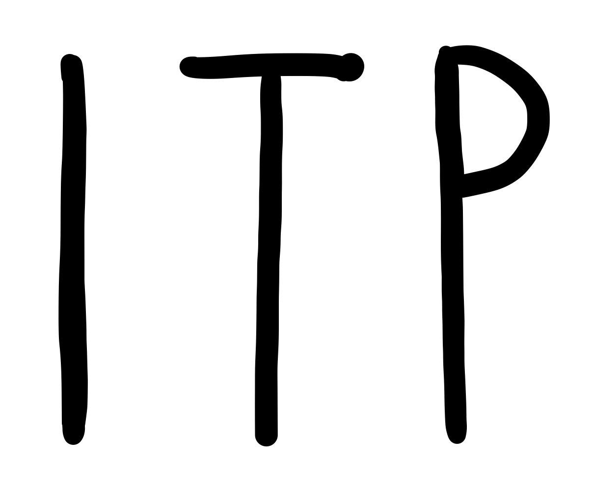
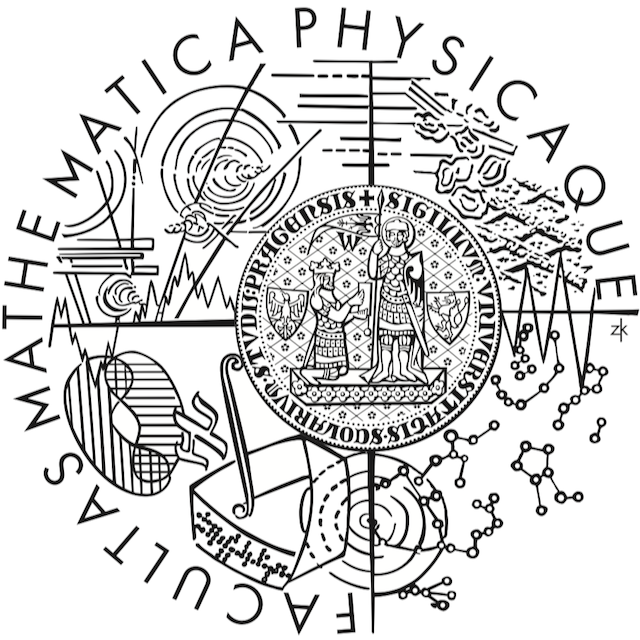

|
|
{kind=link}
|
I am currently a PhD student at the Institute of Theoretical Physics, Faculty of Mathematics and Physics, Charles University.
You can follow my work on any of these platforms
|

|
Šimon Knoška, Robert Švarc
Abstract |
|

|
October 2021 – Present
This research topic focues on analysing algebraic structure of the non-twisting geometries, behaviour of the test particles in them. Further, we will apply the field equations of GR and its modifications. |
|

|
October 2019 – June 2021
The spherically symmetric spacetimes represent one of the most important classes of solutions in general relativity. Therefore, it is very natural to study them also in the context of modified theories of gravity. We directly continue in the previous works in quadratic gravity, where the generalised solutions with the constant Ricci scalar were found in the form of power series expansion in the conformal coordinates. In this work, we have found an alternative expression of the solution in the Robinson–Trautman-like coordinates analogously in the form of power series expansion around the horizon. Although the prescribed recurrent power series solution is more complicated than that in the conformal-to-Kundt coordinates, it posses numerous advantages. Namely, the transformation to the Schwarzschild-like coordinates is considerable simple and the physical interpretation of the coordinates is more evident. These properties are demonstrated in the preliminary investigation of the geodesic motion of the test particles near the black hole with analysis of the effect of the so-called Bach parameter. In particular, we have observed that the Bach parameter together with the positive cosmological constant Λ > 0 has a significant impact on the global structure of the spacetime. |
|
|
October 2016 – June 2019
The main objective of this work was to investigate the possibility of creating the Robinson–Trautman spacetimes from the Kundt class of seed geometries because the Kundt and the Robinson–Trautman geometry are related via conformal transformation and it holds in any number of dimensions. Generating solutions through the conformal transformation of the seed Kundt geometry was done in Einstein’s theory of gravity in an arbitrary number of dimensions as well as in 4-dimensional quadratic gravity. |
This template is a modification to Jon Barron's website.
It has further been modified by Rishab Khincha and Amish Mittal with his version here.
Feel free to clone it for your own use while attributing the original author Jon Barron.